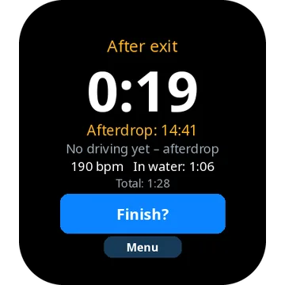

Cold Dip
Baño de hielo, inmersiones en frío y sauna — medidos en tu reloj Amazfit, con ritmo cardíaco, GPS e historial.
La app ya está enviada y en revisión. Cuando la acepten, este botón abrirá la ficha en Zepp App Store.
7 días gratis con todas las funciones, luego un desbloqueo único de 4,99 USD a través de KiezelPay. Sin suscripción.
Cómo funciona
Una mirada breve a una sesión, desde la pantalla de inicio hasta cómo te sentiste después.
Mira la sesión
- Abre Cold Dip en la orilla. Ajusta la temperatura del agua con − / + y pulsa START.
- En la orilla: el temporizador corre mientras te preparas. Pulsa cuando entres al agua.
- En el agua: tiempo en el agua, ritmo cardíaco, temperatura del agua y GPS en aguas abiertas. Pulsa cuando salgas.
- Después de salir: tiempo desde que dejaste el agua y una cuenta atrás para entrar en calor (afterdrop).
- Sauna, si la usas: la app cronometra la ronda; luego vuelves al agua o terminas.
- Cómo te sentiste, 1–5, y guardar. El historial y los récords se quedan en el reloj.
Capturas de pantalla
La misma sesión en un reloj Amazfit redondo y en uno rectangular.
Relojes redondos

Inicio 
En la orilla 
En el agua 
Después de salir 
Sauna 
Cómo te sentiste
Relojes rectangulares

Inicio 
En la orilla 
En el agua 
Después de salir 
Sauna 
Cómo te sentiste
Precio
Se paga la app entera: no hay un desbloqueo «Pro» aparte más adelante.
- Una prueba gratis de 7 días con todas las funciones, desde la primera vez que abres la app.
- Luego un desbloqueo único de 4,99 USD a través de KiezelPay (kzl.io). El reloj muestra un código; pagas en el navegador.
- Sin suscripción. La app nunca ve los datos de tu tarjeta. El pago lo gestiona KiezelPay.
Relojes Amazfit compatibles
Cold Dip funciona en Zepp OS 3 (API 3.0) y posteriores. La lista exacta de modelos la mostrará la tienda cuando Zepp acepte el paquete.
- Balance Balance, Balance 2, Balance 2 XT, Balance 3, Balance Ultra
- Active Active, Active 2 (round and square), Active 3 Premium, Active Edge, Active Max
- T-Rex T-Rex 3, T-Rex 3 Pro, T-Rex Ultra, T-Rex Ultra 2
- Cheetah Cheetah (round and square), Cheetah Pro, Cheetah 2 Pro, Cheetah 2 Ultra
- GTR / GTS / Falcon GTR 4, GTS 4, Falcon
- Bip Bip 5 Unity, Bip 6, Bip Max
El Bip 5 Unity no tiene GPS. En los perfiles con ruta aparecerá «buscando GPS…»; el resto de la app funciona.
No compatibles (Zepp OS anterior): GTR 3, GTS 3, GTS 4 Mini, GTR Mini, Bip 5 (el modelo que no es Unity), T-Rex 2 y Band 7.
Privacidad y tiempo atmosférico
No hay cuenta, ni analítica ni publicidad. El ritmo cardíaco, el GPS y el historial de sesiones se quedan en el reloj.
Cuando el teléfono está conectado, el tiempo (temperatura del aire, viento, condiciones) proviene de MET Norway Locationforecast 2.0, con licencia CC BY 4.0. Solo se envía una posición aproximada a api.met.no. Fuente: © MET Norway (CC BY 4.0).